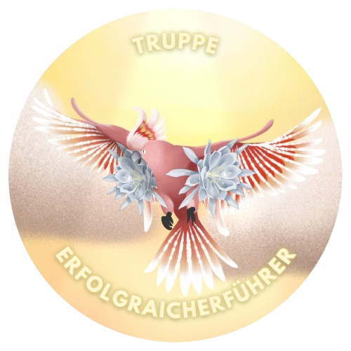
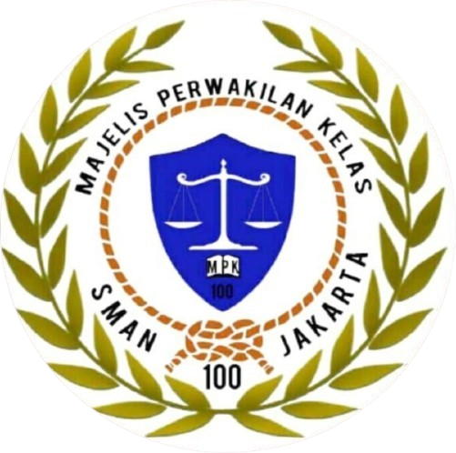

Gebyar Hari Pendidikan Nasional
Perayaan Hari Pendidikan Nasional diisi dengan berbagai penampilan kreatif, lomba edukatif, dan kegiatan inspiratif untuk seluruh siswa SMAN 100 Jakarta.
OSIS dan MPK SMAN 100 Jakarta adalah organisasi siswa yang menjadi wadah pengembangan potensi, aspirasi, dan kepemimpinan siswa. OSIS berperan dalam menjalankan program kegiatan sekolah, sementara MPK mengawasi dan menyalurkan aspirasi siswa secara demokratis. Kami berkomitmen menciptakan lingkungan sekolah yang aktif, positif, dan inspiratif.
Bersatu, Berkarya, Menginspirasi.
.jpg)
Melaksanakan program kegiatan sekolah, mengembangkan potensi siswa, serta menjadi wadah partisipasi aktif dalam membangun lingkungan sekolah yang positif dan berkarakter.

Merepresentasikan nilai integritas, kolaborasi, dan komitmen dalam membangun lingkungan yang berkarakter, progresif, dan berorientasi pada kontribusi positif.

Mengawasi kinerja OSIS, menyalurkan aspirasi siswa, serta memastikan kegiatan organisasi berjalan secara transparan dan demokratis.


Bersatu, Berkarya, Menginspirasi.
Menyajikan informasi terbaru seputar kegiatan Event OSIS & MPK SMAN 100 Jakarta.
Perayaan Hari Pendidikan Nasional diisi dengan berbagai penampilan kreatif, lomba edukatif, dan kegiatan inspiratif untuk seluruh siswa SMAN 100 Jakarta.
KARISMA menjadi ajang pengembangan kreativitas, bakat, dan kebersamaan siswa melalui berbagai penampilan dan kompetisi menarik.